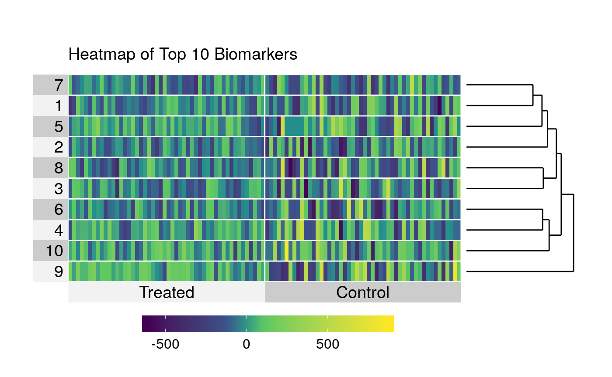

Processing and Analyzing RNA-Seq Data
Nima Hejazi & Alan Hubbard
2017-07-28
##
## Attaching package: 'dplyr'## The following objects are masked from 'package:stats':
##
## filter, lag## The following objects are masked from 'package:base':
##
## intersect, setdiff, setequal, union## biotmle: Moderated Statistics and Targeted Learning for Biomarker Discovery## Version: 1.1.2## Loading required package: GenomicRanges## Loading required package: stats4## Loading required package: BiocGenerics## Loading required package: parallel##
## Attaching package: 'BiocGenerics'## The following objects are masked from 'package:parallel':
##
## clusterApply, clusterApplyLB, clusterCall, clusterEvalQ,
## clusterExport, clusterMap, parApply, parCapply, parLapply,
## parLapplyLB, parRapply, parSapply, parSapplyLB## The following objects are masked from 'package:dplyr':
##
## combine, intersect, setdiff, union## The following objects are masked from 'package:stats':
##
## IQR, mad, sd, var, xtabs## The following objects are masked from 'package:base':
##
## anyDuplicated, append, as.data.frame, cbind, colMeans,
## colnames, colSums, do.call, duplicated, eval, evalq, Filter,
## Find, get, grep, grepl, intersect, is.unsorted, lapply,
## lengths, Map, mapply, match, mget, order, paste, pmax,
## pmax.int, pmin, pmin.int, Position, rank, rbind, Reduce,
## rowMeans, rownames, rowSums, sapply, setdiff, sort, table,
## tapply, union, unique, unsplit, which, which.max, which.min## Loading required package: S4Vectors##
## Attaching package: 'S4Vectors'## The following objects are masked from 'package:dplyr':
##
## first, rename## The following object is masked from 'package:base':
##
## expand.grid## Loading required package: IRanges##
## Attaching package: 'IRanges'## The following objects are masked from 'package:dplyr':
##
## collapse, desc, slice## Loading required package: GenomeInfoDb## Loading required package: Biobase## Welcome to Bioconductor
##
## Vignettes contain introductory material; view with
## 'browseVignettes()'. To cite Bioconductor, see
## 'citation("Biobase")', and for packages 'citation("pkgname")'.## Loading required package: DelayedArray## Loading required package: matrixStats##
## Attaching package: 'matrixStats'## The following objects are masked from 'package:Biobase':
##
## anyMissing, rowMedians## The following object is masked from 'package:dplyr':
##
## count##
## Attaching package: 'DelayedArray'## The following objects are masked from 'package:matrixStats':
##
## colMaxs, colMins, colRanges, rowMaxs, rowMins, rowRanges## The following object is masked from 'package:base':
##
## applyIntroduction
Here, we briefly work through how to use the biotmle package with data generated by next-generation sequencing technologies, which, in contrast to microarray technologies, produce measurements in the form of discrete counts.
Simulation: Data Structure
set.seed(6423709)
n <- 50
g <- 2500
cases_pois <- 50
controls_pois <- 10
ngs_cases <- as.data.frame(matrix(replicate(n, rpois(g, cases_pois)), g))
ngs_controls <- as.data.frame(matrix(replicate(n, rpois(g, controls_pois)), g))
ngs_data <- as.data.frame(cbind(ngs_cases, ngs_controls))
exp_var <- c(rep(1, n), rep(0, n))
batch <- rep(1:2, n)
covar <- rep(1, n * 2)
design <- as.data.frame(cbind(exp_var, batch, covar))
head(ngs_data[, 1:7])## V1 V2 V3 V4 V5 V6 V7
## 1 69 61 39 46 50 57 43
## 2 42 59 50 54 44 53 54
## 3 41 49 52 54 50 58 34
## 4 30 44 49 44 46 36 61
## 5 50 56 45 44 46 61 58
## 6 61 50 47 53 49 54 67Processing: Data Transformation
se <- SummarizedExperiment(assays = list(counts = DataFrame(ngs_data)),
colData = DataFrame(design))
se## class: SummarizedExperiment
## dim: 2500 100
## metadata(0):
## assays(1): counts
## rownames: NULL
## rowData names(0):
## colnames(100): V1 V2 ... V49.1 V50.1
## colData names(3): exp_var batch covarAnalysis: Assessing the Effect of Exposure
rnaseqTMLEout <- biomarkertmle(se = se,
varInt = 1,
type = "exposure",
ngscounts = TRUE,
parallel = TRUE,
family = "gaussian",
g_lib = c("SL.mean", "SL.glm", "SL.randomForest"),
Q_lib = c("SL.mean", "SL.glm", "SL.randomForest",
"SL.nnet")
)
head(rnaseqTMLEout@tmleOut$E[, seq_len(6)])## [,1] [,2] [,3] [,4] [,5] [,6]
## result.1 -329.83655 -212.28070 160.39144 32.96832 -36.05786 -146.77124
## result.2 91.43805 -129.00196 -39.20680 -47.18052 44.29473 -30.83862
## result.3 102.01072 -294.65959 -77.65629 -376.36991 -61.66602 -441.74551
## result.4 323.94443 93.76761 13.80324 93.71017 47.56326 224.33603
## result.5 11.71456 -148.33216 93.43461 47.79556 61.82086 -229.99698
## result.6 -183.73280 -4.00971 45.02578 -53.02987 -4.00971 -69.37162limmaTMLEout <- modtest_ic(biotmle = rnaseqTMLEout)
head(limmaTMLEout@topTable)## logFC AveExpr t P.Value adj.P.Val B
## result.1 -32.072167 -32.072167 -1.7430776 0.08297431 0.9303074 -4.595093
## result.2 -25.903359 -25.903359 -1.4289259 0.15470453 0.9342061 -4.595106
## result.3 -15.865179 -15.865179 -0.6675294 0.50526227 0.9731485 -4.595127
## result.4 20.394523 20.394523 0.9768991 0.32988929 0.9401033 -4.595120
## result.5 -23.932669 -23.932669 -1.2276717 0.22112330 0.9401033 -4.595113
## result.6 -8.540187 -8.540187 -0.4839883 0.62896415 0.9746949 -4.595130
## IDs
## result.1 result.1
## result.2 result.2
## result.3 result.3
## result.4 result.4
## result.5 result.5
## result.6 result.6Results: Data Visualization
plot(x = limmaTMLEout, type = "pvals_adj")
plot(x = limmaTMLEout, type = "pvals_raw")
varInt_index <- which(names(colData(se)) %in% "exp_var")
designVar <- as.data.frame(colData(se))[, varInt_index]
design <- as.numeric(designVar == max(designVar))
heatmap_ic(x = limmaTMLEout, design = design, FDRcutoff = 1.0, top = 10)
volcano_ic(biotmle = limmaTMLEout)
Session Information
## R version 3.4.1 (2017-06-30)
## Platform: x86_64-apple-darwin16.6.0 (64-bit)
## Running under: macOS Sierra 10.12.5
##
## Matrix products: default
## BLAS: /System/Library/Frameworks/Accelerate.framework/Versions/A/Frameworks/vecLib.framework/Versions/A/libBLAS.dylib
## LAPACK: /System/Library/Frameworks/Accelerate.framework/Versions/A/Frameworks/vecLib.framework/Versions/A/libLAPACK.dylib
##
## locale:
## [1] en_US.UTF-8/en_US.UTF-8/en_US.UTF-8/C/en_US.UTF-8/en_US.UTF-8
##
## attached base packages:
## [1] parallel stats4 stats graphics grDevices utils datasets
## [8] methods base
##
## other attached packages:
## [1] bindrcpp_0.2 SummarizedExperiment_1.6.3
## [3] DelayedArray_0.2.7 matrixStats_0.52.2
## [5] Biobase_2.36.2 GenomicRanges_1.28.4
## [7] GenomeInfoDb_1.12.2 IRanges_2.10.2
## [9] S4Vectors_0.14.3 BiocGenerics_0.22.0
## [11] biotmleData_0.99.1 biotmle_1.1.2
## [13] dplyr_0.7.2
##
## loaded via a namespace (and not attached):
## [1] superheat_0.1.0 lattice_0.20-35
## [3] colorspace_1.3-2 htmltools_0.3.6
## [5] yaml_2.1.14 rlang_0.1.1.9000
## [7] glue_1.1.1 DBI_0.7
## [9] GenomeInfoDbData_0.99.0 foreach_1.4.3
## [11] bindr_0.1 plyr_1.8.4
## [13] stringr_1.2.0.9000 zlibbioc_1.22.0
## [15] munsell_0.4.3 gtable_0.2.0
## [17] tmle_1.2.0-5 codetools_0.2-15
## [19] evaluate_0.10.1 labeling_0.3
## [21] knitr_1.16 doParallel_1.0.10
## [23] Rcpp_0.12.12 backports_1.1.0
## [25] scales_0.4.1.9002 limma_3.32.4
## [27] XVector_0.16.0 ggplot2_2.2.1
## [29] digest_0.6.12 stringi_1.1.5
## [31] grid_3.4.1 rprojroot_1.2
## [33] tools_3.4.1 bitops_1.0-6
## [35] magrittr_1.5 RCurl_1.95-4.8
## [37] lazyeval_0.2.0 tibble_1.3.3.9001
## [39] ggdendro_0.1-20 wesanderson_0.3.4
## [41] pkgconfig_2.0.1 MASS_7.3-47
## [43] Matrix_1.2-10 data.table_1.10.4
## [45] SuperLearner_2.0-23-9000 nnls_1.4
## [47] assertthat_0.2.0 rmarkdown_1.6
## [49] iterators_1.0.8 R6_2.2.2
## [51] compiler_3.4.1